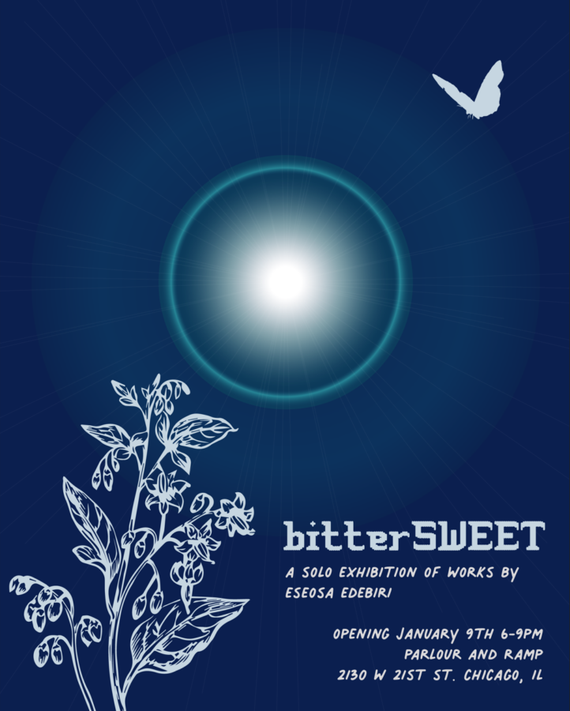

Eseosa Edebiri: bitterSWEET
⟡ To start off the new year, we are excited to announce our upcoming solo exhibition 𝘣𝘪𝘵𝘵𝘦𝘳𝘚𝘞𝘌𝘌𝘛 by artist and educator Eseosa Edebiri. ⟡ Opening reception is January 9th 6-9pm.
About the work:
Breath in, breath out. How do we contextualize grief? What does care for the self look like when all you want is what you can’t have – when the absence of another is all that is weighing on you. Last year, I lost my maternal grandmother. I don’t go most days without thinking about her. It was a loss that was hard to process regardless, but especially at the time, so of course, here I am making work about it. Crafting is often, if not mostly, processing for me.
Crochet is present as a soft medium to convey hard feelings, but you can expect to see cyanotypes built up of depths of this past summer and fall that proved to challenge my body, my sense of resiliency, and outlook on life as well as a touch of my time in the Midwest that helped me get through. I believe in getting through, not out. ⟡ Eseosa Edebiri (she/ it) recieved a BFA from The School of the Art Institute of Chicago and is a teaching artist in the city. Originally from The Bay Area, Edebiri is a Nigerian American teaching artist who works within craft to speak to autonomy, intergenerational trauma, chronic illness, where we draw the line on disability, and magical realism. ♡ We hope to see you there!